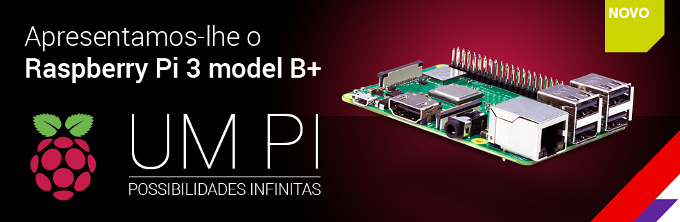

Raspberry PI: O pequeno notável
by Emerson
Postado em: 01 de maio de 2019
Raspberry Pi é uma série de computadores de placa única do tamanho reduzido, que se conecta a um monitor de computador ou TV, e usa um teclado e um mouse padrão, desenvolvido no Reino Unido pela Fundação Raspberry Pi. Todo o hardware é integrado numa única placa.
O principal objetivo é promover o ensino em Ciência da Computação básica em escolas, inclusão e empoderamento social, sendo multiplataforma, considerando as mais consagradas marcas de videogames do mundo é também como parte deste processo uma excelente plataforma, tanto para a indústria quanto para as casas inteligentes e os IOT - Internet das Coisas, marcando e melhorando o nivel de empregabilidade, por tecnologias que nos permitem adentrar na era dos exabytes, da revolucao digital, ad-hoc, promovendo procedimentos únicos, específicos, Inovação tecnológica, que é uma saída resiliente aos entraves sociais, tendo muito mais dados sobre a vida a partir desta fase de nuvens e Big Data, os negócios e as atividades finas, core business, e portanto, com conceitos de qualidade total, competitividade em maior escala, primeiro mundo de um modo mais abrangente, tudo neste fino e poderoso hardware a todas as idades também.
"Um computador pequeno e acessível que você pode usar para aprender programação."
Fundação Raspberry - https://www.raspberrypi.org/
Existem atualmente dois modelos: Modelo A e Modelo B. A grande diferença entre os dois modelos é que o Modelo B possui um controlador Ethernet e duas portas USB, enquanto que o Modelo A possui apenas uma porta USB e nenhuma porta de Ethernet.
O Raspberry Pi é compatível com sistemas operativos baseados em GNU/Linux e Windows 10 IoT versão gratuita e adaptada para IoT.
O Raspbian é a distribuição Linux oficial do Raspberry Pi. As distribuições Arch Linux [1] e Debian são também oficialmente suportadas e disponíveis para download. O sistema operativo é normalmente armazenado num cartão SD.